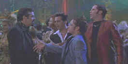

A
Night at the Roxbury/D,B+ |
Paramount/1998/81m/WS
1.85 |
There are days when I feel I checked my brain
at the door. After watching A Night at the Roxbury I am convinced that I forget the
claim check one evening. Of course, that should mean that I feel right at home with the
Butabi brothers in this messy comedy set in Los Angeles.
 |
|
Making the disco scene.©Paramount |
Big Steve and little Doug Butabi set a new
standard for stupidity. These fellow travelers of the dance club set mug their way through
every situation taking physical comedy to a new low. Outcasts with a knack for finding the
wrong expression in almost every situation, the brothers work in poppa's plastic plant
shop, a popular stopover for Angelinos hoping to stop the ravages of age. While the
brothers dream of designing their own club, Steve is hotly pursued as a mate by Emily, the
sexually hungry daughter of the lighting shop adjacent to the Butabi's store. The pressure
to find acceptance in a plastic world even causes a rift between Steve and Doug and before
you can Butabi, a wedding ceremony is underway. But it's the club scene that is most
important to A Night at the Roxbury and that's where the brothers find their
dreams.
Chris Kattan and Will Ferrell are the brothers Butabi. Another
pair of refugees from Saturday Night Live hoping to make it big in the movies, their turn in
A Night at the Roxbury may not even appeal to fans. The supporting cast does what they
have to do to get their pay checks. Dan Hedaya barks at his boys like a watch dog chained
too tightly to prevent the crime. Loni Anderson does little more than blend in with the
plastic plants and permanent silk flowers. Molly Shannon actually has some very good
moments as the neighbor who has sexual desire for Steve overpowers almost everything in
her way. Chazz Palminteri goes unaccredited as a night club owner inspired by the lunacy
of the brothers who becomes a Fluffy Whip addict. Richard Grieco plays Richard Grieco for
some reason I cannot fathom. Someone must have thought it was funny.
Plastic is as plastic does or some such saying should apply to
this excellent DVD transfer of A Night at the Roxbury. The colors are a punchy
concoction that look like they were created in the back room of the Butabi silk flower
shop. Background details are well defined and there are no annoying artifacts beyond the
comic material. The sound track is a no-brainer, pounding with a bass beat that rocks. The
surrounds are aggressive on this Dolby Digital 5:1 mix.
|
|
Home Theater Reference System
Laser discs and DVDs are evaluated on the following
current home theater equipment: Stewart 6' x 11' Videomatte 1.33 Gain Screen,
2 Runco 980 Ultra Projectors stacked, Faroudja LD100 Line Doubler, Lexicon DC1
Surround
Processor/Switcher, 2 Pioneeer Elite CLD-97 Laser Disc Players with AC-3 Modification,
Sony 7000 DVD Player, Toshiba SD-3006 DVD Player, Total Media Systems Reference Home
Theater Suite, LR Fronts, Center, LR Sides, LR Rears, 2 Velodyne F1500R Subwoofers,
Sunfire Cinema Grand5 Channel Amp, Sunfire 2 Channel Amp, Lexicon RF Demodulator, Lexicon
T-500 System Remote Control, Speaker Wire and Interconnects by Straight Wire. |
HOT LINKS
The American Widescreen Museum
The wealth of information about widescreen movies is presented in a intelligent and
easy to understand interface. Color in movies is given a similar treatment. |
Tilting at Hollywood

Robert Harris is part
of the dynamic duo that restored Lawrence of Arabia, Spartacus, My Fair Lady and Vertigo.
Harris rides a white horse into the battle to preserve our film legacy. Click on the
image to read more.
|
Check out the Movie Poster Archive
for short bios and images of Susan Hayward, Kirk Douglas, Katharine Hepburn and many more.
This month's featured star is John Wayne. The Feature Archive has articles
ranging from Akira
Kurosawa to Blonde
Bimbos and John
Ford.

Click on the image of The Heistmasters
for an interesting feature on the tough guys that pull off the big jobs.
|
|